Primarch
| Primarchs Primarchae | |
|---|---|
 Nine primarchs on the reviewing balcony at the triumph of Ullanor, at the close of the Great Crusade Artwork © Games Workshop | |
| Creator | The Emperor of Mankind |
| Created | c. 792.M30, in the gene-vaults beneath the Imperial Palace, Terra |
| Number | Twenty |
| Scattered | c. 792.M30, by the powers of Chaos |
| Rediscovered | 801–981.M30 |
| Allegiance at the end of the Horus Heresy | |
| Loyal | Nine (list) |
| Traitor | Nine (list) |
| Struck from the record | Two (the Second and the Eleventh) |
| Known for | Command of the Space Marine Legions in the Great Crusade; the Horus Heresy |
| Status | Two loyal primarchs active in the Era Indomitus; most others dead, missing or damned |
The primarchs (singular primarch, from the High Gothic primarchus, "first ruler") were the twenty genetically engineered superhuman sons of the Emperor of Mankind. Created late in the 30th millennium in the gene-vaults beneath the Imperial Palace on Terra, they were intended to serve as the generals, governors and living symbols of the Great Crusade. The Space Marine Legions, the first Adeptus Astartes, were raised from the gene-seed of the primarchs' genomes, and each Legion was commanded by the primarch whose template it carried.[1][2]
Before the Emperor could present his sons to the Imperium, the powers of Chaos carried the twenty gestation capsules through the Warp and scattered them across the lost human worlds of the Age of Strife. Each primarch grew up alone, among strangers, in a culture that shaped his character, and each was found by the Emperor or by his brothers as the crusade advanced. When they were reunited with their Legions, the primarchs became the foremost military and political leaders of the Imperium, answerable only to their father.[1]
The loyalty of the primarchs ended in catastrophe. In 005.M31 the Warmaster Horus rebelled, and eight of his brothers followed him. The Horus Heresy that followed cost the lives of the Emperor's closest sons, left him entombed on the Golden Throne, and ended the age of the primarchs. Of the twenty, only two walk the galaxy in the early 42nd millennium: Roboute Guilliman, who rose from stasis in 999.M41 to lead the Indomitus Crusade, and Lion El'Jonson, who woke from his long sleep beneath the fortress-monastery of the Dark Angels.[3][4]
Terminology
[edit]The Imperial Cult calls the primarchs the "Emperor's sons" and, in some Ecclesiarchy tracts, the "demigods of the Great Crusade". The Adeptus Mechanicus speaks of them as "Primary Genetic Templates", and the oldest surviving Administratum ledgers list them by Legion number, not by name, which is how the two struck from the record are still known.[1] A Space Marine speaks of his own primarch as his "gene-sire", and of the primarch's brothers as "the Legions' fathers".
The programme that created them is called the Primarch Project. Its records, held in sealed vaults beneath the Palace, were never fully catalogued, and what the Imperium knows of it comes largely from fragments recovered during the Heresy.[2]
Creation
[edit]The Primarch Project
[edit]The date on which the Primarch Project began is unrecorded, and the Emperor never revealed how it was achieved. Imperial scholars hold that the work was carried out in two stages. First, a portion of the Emperor's own genetic code was refined into a pure, undifferentiated template, the primarch gene-stock. That stock was then differentiated into twenty separate genomes, each with its own gifts and weaknesses.[1] The method did not use cloning. Mechanicus genetors who later examined the surviving records found that some of the twenty strands had sequences deliberately removed from the base template, and that others carried additions that were not human. One strand, tagged as the sixth, held markers resembling those of a canine predator. Some savants connect this with the wolf-like temperament of Leman Russ and with the feral mutations that afflict the Space Wolves, though the numbering of the samples may not correspond to the Legion numbers.[2]
Most authorities agree that the work was not only a matter of flesh. Records of the Imperial Cult and some Inquisitorial summaries hold that the Emperor used knowledge gained in the Warp to shape the spirit of each primarch as well as the body, which would account for their personal magnetism and for the sense of destiny that surrounded them. The same sources warn that a soul so shaped burns brightly in the Immaterium, and draws the notice of daemons.[5] The Emperor therefore protected the gestation capsules with inscribed wards and with the strongest Geller field ever built, set around the gene-vaults under the Himalazian mountains.[1]
The date of the Project's completion is placed at about 792.M30. Perturabo later reckoned his own birth to that year, though he was speaking of his arrival on Olympia, not of the capsule's creation.[2] The Adeptus Custodes were drawn from the same pure gene-stock, though their genetic code is simpler than any primarch's, and the Thunder Warriors and the first Space Marines were raised from earlier and cruder derivatives.[1]
The scattering
[edit]The powers of Chaos learned of the Emperor's work, and chose to strike at it before it could bear fruit. About 792.M30 a localised Warp rift opened in the gene-vaults and drew the twenty capsules out of the Palace. They were carried through the Immaterium and set down on human worlds that had been cut off from Terra since the Age of Strife.[2] Why the Ruinous Powers did not simply destroy the capsules is not known. Some theologians of the Imperial Cult argue that the Powers hoped to corrupt the sons instead, and note that every one of the nine who later turned Traitor had been exposed to the energies of the Warp in this passage. Others reply that eight of the twenty remained loyal, and that corruption cannot be proved by their origin alone.[5]
The Emperor did not wait for his sons to be recovered. The gene-seed of the primarchs, already prepared, was implanted in the finest warriors of the Unification Wars, and the first Space Marine Legions took the field when the Great Crusade began in about 798.M30.[1] The Legions fought without their primarchs for decades. Their loyalty, and the sense of loss that they felt when the primarchs were found, shaped the character of every Legion.
Upbringing on the lost worlds
[edit]The twenty capsules landed in very different places. The first primarch found was raised by a tyrant's court on a ruined hive world; another was a slave-gladiator whose mind was damaged by neural implants; another was a hunter-prince among nomads, another the ruler of a thriving mercantile city-state. Each world gave its primarch a character that he kept after his rediscovery, and many of the primarchs' later quarrels can be traced to their upbringing. The grave and withdrawn Lion El'Jonson grew up in the monster-haunted forests of Caliban; Roboute Guilliman was adopted into the consular family of a mercantile republic on Macragge; Sanguinius was found among the mutant tribes of Baal Secundus; Rogal Dorn was raised in the fortress-cities of Inwit.[1] Some of these homeworlds were later broken by the primarchs who left them: Nuceria, the home of Angron, was scoured of all life by the World Eaters after Angron's rebellion, and Nostramo fell into ruin after the departure of Konrad Curze.[2]
The Great Crusade
[edit]Rediscovery
[edit]As the Great Crusade advanced, the Emperor used his powers of foresight to locate his lost sons. He took each in turn, revealed himself to him, and confirmed his place as the commander of the Legion made from his genome. Some primarchs bowed to him at once; others, such as Magnus the Red, Mortarion and Vulkan, were tested or challenged before they accepted his authority. The Emperor, according to a Mechanicum account of the discovery of Angron, told one of his savants that he felt no affection for the primarchs, and that they were instruments of the Imperium.[5][a]
The order of rediscovery, as established by the Administratum from the surviving crusade logs, is given in the table below. A primarch was often found years before he took command of his Legion.[1]
| Legion | Primarch | World of rediscovery | Year (M30) |
|---|---|---|---|
| XVI | Horus | Cthonia | 801 |
| VI | Leman Russ | Fenris | 819 |
| II | [data expunged] | [data expunged] | [data expunged] |
| X | Ferrus Manus | Medusa | 824 |
| III | Fulgrim | Chemos | 830 |
| XVIII | Vulkan | Nocturne | 832 |
| VII | Rogal Dorn | Inwit | 835 |
| XIII | Roboute Guilliman | Macragge | 837 |
| XV | Magnus the Red | Prospero | 840 |
| IX | Sanguinius | Baal | 843 |
| I | Lion El'Jonson | Caliban | 846 |
| IV | Perturabo | Olympia | 849 |
| XIV | Mortarion | Barbarus | 854 |
| XVII | Lorgar | Colchis | 857 |
| V | Jaghatai Khan | Chogoris | 865 |
| VIII | Konrad Curze | Nostramo | 896 |
| XII | Angron | Nuceria | 899 |
| XIX | Corvus Corax | Deliverance | 922 |
| XI | [data expunged] | [data expunged] | [data expunged] |
| XX | Alpharius Omegon | Unrecorded | 981 |
Command of the Legions
[edit]Each primarch took command of an expeditionary fleet and the Legion that went with it. He was given the authority of a proconsul over every world his forces brought into compliance, and a primarch's word on such a world carried the weight of the Emperor's. The Legions bore the stamp of their commanders. The Ultramarines under Guilliman became the largest and most methodical, the Space Wolves under Russ the most savage and loyal to their own traditions, the Imperial Fists under Dorn the masters of siegecraft and defence, and the Blood Angels under Sanguinius the most chivalrous. Among the rival Legions, the Iron Warriors were bitter masters of the siege, the Night Lords were terror troops, and the Alpha Legion excelled in covert war.[1][2]
The campaigns of the Great Crusade, among them the Rangdan Xenocides and the triumph over the Ork empire at Ullanor, were commanded by the primarchs. After Ullanor the Emperor named Horus the first Warmaster, giving him supreme command of the crusade, and returned to Terra to continue his secret work beneath the Palace. The elevation rankled with some of the others, in particular those whose Legions had borne equal or heavier losses.[6]
Rivalry and the Council of Nikaea
[edit]The primarchs were proud, and their rivalries were old. Even loyal primarchs resented one another's honours, and the Imperium's own records note quarrels between Leman Russ and Lion El'Jonson, between Fulgrim and Ferrus Manus, and among the officers of the Legions that each led.[5] At the Council of Nikaea, called by the Emperor in 001.M31, the primarchs and the Imperium's leaders debated the use of psychic powers. The Emperor's Decree Absolute that followed banned sorcery and the Librarius of the Legions, a ruling that Magnus the Red opposed.[2][b]
The Horus Heresy
[edit]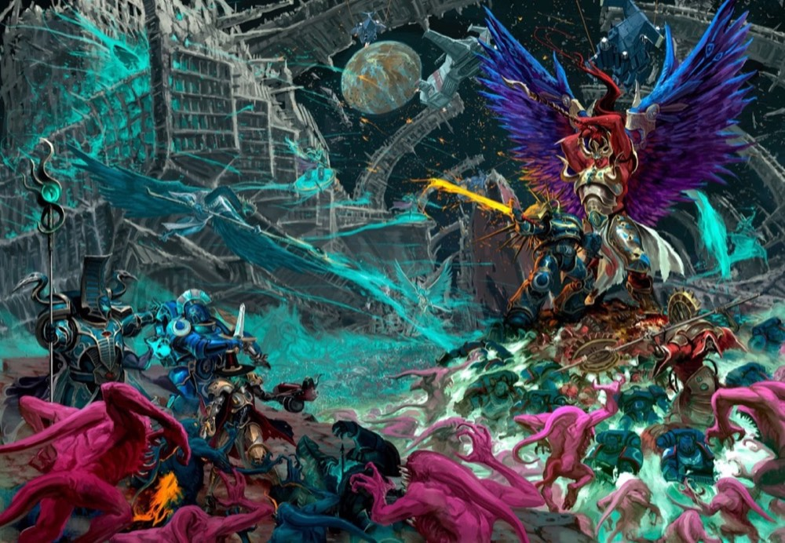
Corrupted by Chaos on the moon of Davin in 004.M31, Horus declared against the Emperor in 005.M31. Nine of the primarchs joined him: Horus himself, Fulgrim, Perturabo, Konrad Curze, Angron, Mortarion, Magnus the Red, Lorgar and Alpharius Omegon. The reasons differed. Lorgar had long believed that the Emperor should be worshipped; Magnus had been condemned for sorcery; Angron wanted vengeance for his slavery; Fulgrim and Perturabo were consumed by pride and bitterness; Curze and Mortarion nursed old wounds against the Emperor himself. The Alpha Legion's motives remain the least certain of all.[2][7]
The war opened with the atrocity at Isstvan III and the Drop Site Massacre on Isstvan V, where three loyalist Legions were almost destroyed. In the Massacre Ferrus Manus was killed by his brother Fulgrim, and the surviving loyal primarchs, Vulkan and Corvus Corax, were gravely wounded. The Word Bearers and their allies struck at the Ultramarines on Calth, and the Warp storm they raised, the Ruinstorm, cut the Imperium in two. Magnus the Red was struck down by Leman Russ in the Burning of Prospero, and the shattered Thousand Sons threw in their lot with Horus.[2][7]
Across seven years the war was fought from the eastern marches to the Solar edge. On the loyal side, Roboute Guilliman, Sanguinius and Lion El'Jonson founded the stopgap realm of Imperium Secundus beyond the Ruinstorm; Rogal Dorn organised the defence of the Imperial Palace; Jaghatai Khan led the White Scars' mobile defence of the outer system. Alpharius Omegon struck at the Solar defences and one of the twins was killed by Dorn at Pluto, according to the accepted Imperial record.[7]
At the Siege of Terra in 014.M31, Horus lowered the void shields of his flagship, the Vengeful Spirit. The Emperor, his Adeptus Custodes, Sanguinius and Rogal Dorn with a force of Imperial Fists teleported aboard. Sanguinius was killed by Horus; the Emperor then killed Horus, and was mortally wounded in the exchange. Dorn carried the Emperor's broken body to the Golden Throne.[7][8]
The twenty primarchs
[edit]The table below lists the primarchs by Legion number, with the best-attested homeworld and fate. Where Imperial sources disagree, the accepted account of the Era Indomitus is given first, with the earlier record in the notes.[1]
| No. | Portrait | Primarch | Legion | Homeworld | Allegiance | Fate |
|---|---|---|---|---|---|---|
| I | 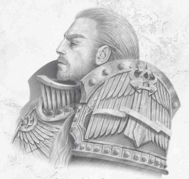 | Lion El'Jonson | Dark Angels | Caliban | Loyal | Wounded in the duel with Luther, c. 014.M31; slept ten thousand years; awoke in the Era Indomitus, early M42 |
| II | [data expunged] | [data expunged] | [data expunged] | Struck from the record | Records sealed | |
| III | 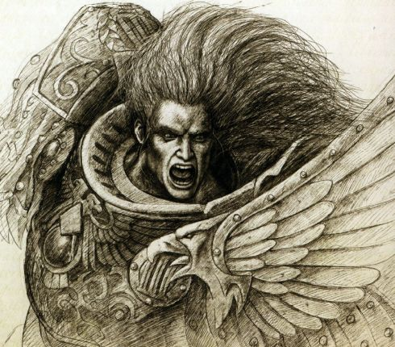 | Fulgrim | Emperor's Children | Chemos | Traitor | Daemon Prince of Slaanesh since Iydris, c. 007.M31 |
| IV | 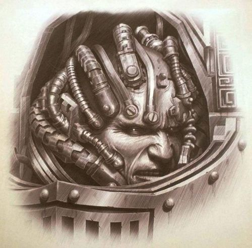 | Perturabo | Iron Warriors | Olympia | Traitor | Lives; Daemon Primarch of the Iron Warriors |
| V |  | Jaghatai Khan | White Scars | Chogoris | Loyal | Vanished in 084.M31 pursuing Drukhari raiders into the Webway |
| VI | 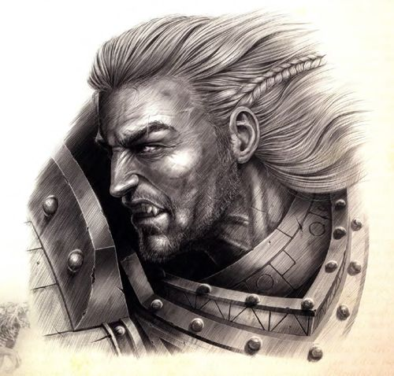 | Leman Russ | Space Wolves | Fenris | Loyal | Vanished in 211.M31; promised to return at the Wolftime |
| VII | 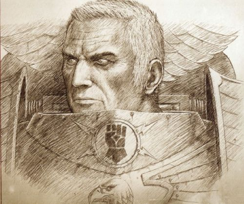 | Rogal Dorn | Imperial Fists | Inwit | Loyal | Presumed killed in the First Black Crusade, 781.M31; fate disputed |
| VIII | 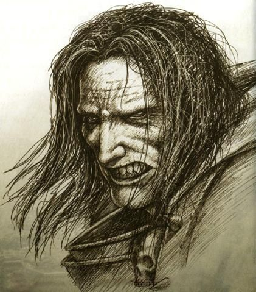 | Konrad Curze | Night Lords | Nostramo | Traitor | Killed on Tsagualsa by an assassin sent from Terra, as he had foretold, c. 015.M31[c] |
| IX | 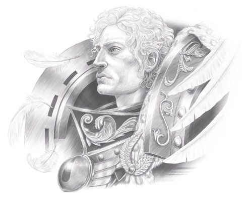 | Sanguinius | Blood Angels | Baal Secundus | Loyal | Slain by Horus at the Siege of Terra, 014.M31 |
| X | 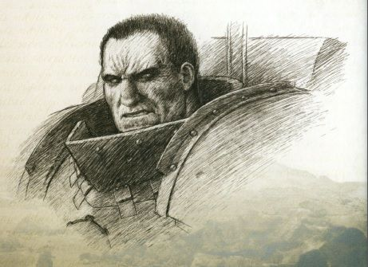 | Ferrus Manus | Iron Hands | Medusa | Loyal | Killed by Fulgrim at the Drop Site Massacre, 006.M31 |
| XI | [data expunged] | [data expunged] | [data expunged] | Struck from the record | Records sealed | |
| XII | 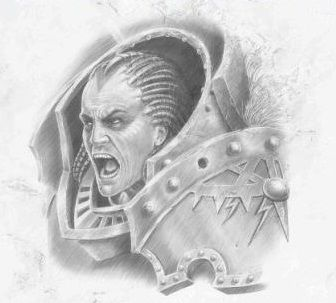 | Angron | World Eaters | Nuceria | Traitor | Daemon Primarch of Khorne since the Battle of Nuceria, 008.M31 |
| XIII |  | Roboute Guilliman | Ultramarines | Macragge | Loyal | Mortally wounded by Fulgrim at Thessala, 121.M31; restored in 999.M41; Lord Commander of the Imperium |
| XIV | 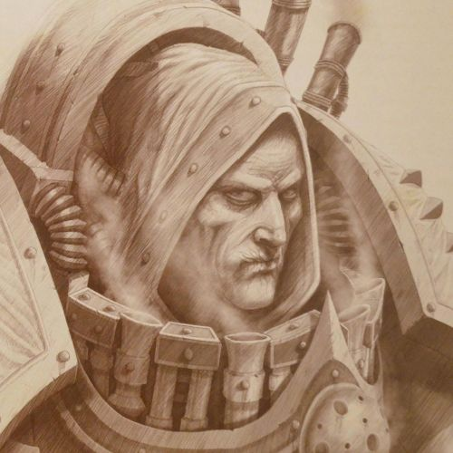 | Mortarion | Death Guard | Barbarus | Traitor | Daemon Primarch of Nurgle since c. 013.M31; defeated by Guilliman in the Plague Wars, early M42 |
| XV |  | Magnus the Red | Thousand Sons | Prospero | Traitor | Daemon Primarch of Tzeentch |
| XVI | 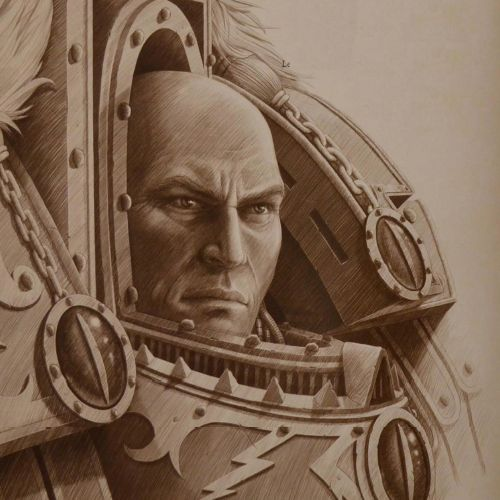 | Horus | Sons of Horus (formerly Luna Wolves) | Cthonia | Traitor | Killed by the Emperor at the Siege of Terra, 014.M31 |
| XVII | 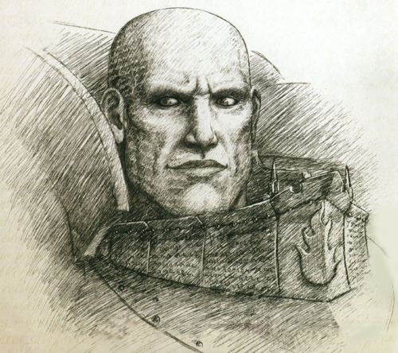 | Lorgar | Word Bearers | Colchis | Traitor | Daemon Primarch of Chaos Undivided |
| XVIII | 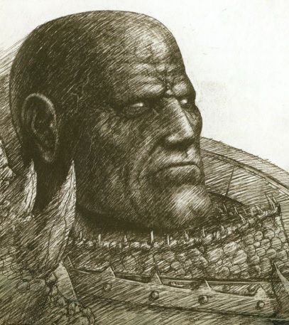 | Vulkan | Salamanders | Nocturne | Loyal | Vanished about a thousand years after the Heresy |
| XIX | 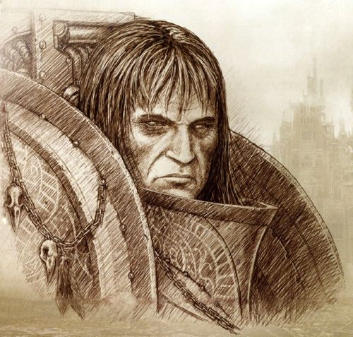 | Corvus Corax | Raven Guard | Deliverance | Loyal | Left Deliverance for the Eye of Terror to hunt the Traitors, c. 022.M31; unseen since |
| XX | 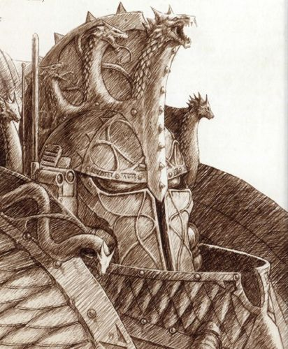 | Alpharius Omegon | Alpha Legion | Unrecorded | Traitor | Twin primarchs; Alpharius killed by Dorn at Pluto, c. 010.M31; Omegon reported killed by Guilliman; disputed |
Every Chapter of the Second Founding and later traces its gene-seed through the primarch whose Legion it was drawn from. The Black Templars, for example, descend from the Imperial Fists.[1]
The lost primarchs
[edit]Two of the twenty were struck from the Imperial record before the Heresy began. Of the Second and Eleventh primarchs and their Legions, the Imperium knows almost nothing. Two empty plinths stood in the Investiary of the Imperial Palace, where statues of the primarchs were raised, and the Praetorian is said to have remarked that "no one ever spoke of those two absent brothers", whose separate tragedies had seemed aberrations and may have been warnings that no one heeded.[9] Horus and Fulgrim are reported to have sworn never to speak of the pair, and a Word Bearers sermon of the period suggests that the gene-seed and warriors of the two Legions were absorbed into the others, most notably the Ultramarines.[7] The Inquisition holds that the circumstances of their removal are sealed by edict and that inquiry is punishable by death.
Daemon Primarchs
[edit]After the Heresy the surviving Traitor primarchs fled into the Eye of Terror. Several became daemon princes, bound to the Chaos Gods in return for power. Fulgrim became a prince of Slaanesh, Angron of Khorne, Mortarion of Nurgle and Magnus the Red of Tzeentch; Lorgar and Perturabo serve the powers collectively as primarchs of Chaos Undivided. Each rules a daemon world or a warband and wages an endless war against the Imperium. These beings are called Daemon Primarchs in Inquisitorial usage, to distinguish them from the lesser princes who were once Space Marines.[7][3]
The Daemon Primarchs are dangerous out of proportion to their numbers. Fulgrim dealt Guilliman his supposedly fatal wound in 121.M31; Magnus trapped the Lord Commander's fleet in the Maelstrom during the Terran Crusade and was driven back into the Webway at the Lunar gate; and Mortarion invaded Ultramar in the Plague Wars, where Guilliman fought him to a brutal stalemate on the hospital world of Iax.[3] The Imperium considers the ability of one primarch to destroy another to be proof that no single primarch is invulnerable.
The loyal primarchs after the Heresy
[edit]With the Emperor on the Golden Throne, the surviving loyal primarchs reorganised the Imperium. Roboute Guilliman became Lord Commander and wrote the Codex Astartes, and the Second Founding divided each loyal Legion into Chapters of about a thousand warriors, to prevent any one commander from again holding the power that Horus had held. Russ, Dorn and Vulkan opposed the division at first, and the Imperial Fists accepted it only after the battle of the Iron Cage.[10] The primarchs then dispersed. The Khan vanished in 084.M31; Dorn is said to have died in the First Black Crusade; Russ vanished in 211.M31; Corax withdrew after the Heresy and was lost in the Eye of Terror; Vulkan departed about a thousand years after the Heresy; and Guilliman himself fell to Fulgrim and lay in stasis on Macragge.[1]
The disappearance of the loyal primarchs has been widely noted in Imperial thought. The Ecclesiarchy holds that the Emperor withdrew them from the world as a mark of his displeasure at their quarrels; the Inquisition, more soberly, notes that primarchs are creatures of war and that few of them could have been expected to survive ten thousand years of it.[5]
The Era Indomitus
[edit]
At the close of the 41st millennium the Imperium was cut in half by the Great Rift. In 999.M41 the Archmagos Belisarius Cawl, aided by the aeldari prophetess Yvraine and the power of Ynnead, brought Roboute Guilliman out of stasis in the Temple of Correction on Macragge. The first returned primarch took the title of Lord Commander of the Imperium once more, spoke with the Emperor in the Throne Room, and began the Indomitus Crusade.[3][11]
In the early 42nd millennium a second primarch returned. During the campaign known as the Arks of Omen, Lion El'Jonson woke at last in the heart of the Rock, the mobile fortress-monastery of the Dark Angels, after ten thousand years of sleep. His arrival transformed the posture of the Dark Angels and the Unforgiven, and the Imperium's astropaths report him acting on his own authority, with an independence that the Lord Commander has had to take into account.[4]
Imperial sources are divided on whether further primarchs are returning. The Space Wolves maintain that Russ will come at the Wolftime, the Salamanders that Vulkan will return when the nine relics he hid are found, and the White Scars that the Khan still hunts in the Webway. The Adeptus Mechanicus holds that the return of any primarch requires technology that only Cawl possesses, and Cawl's own records, as released to the Lord Commander's office, make no such promise.[12] The Inquisition forbids public speculation.
Nature and abilities
[edit]Physiology
[edit]A primarch stands more than three metres tall and is far stronger and faster than any Space Marine, whose abilities derive from his gene-seed. Primarchs heal from wounds that would kill any other being, do not age at the pace of ordinary men, and are, in the Imperial Cult's formulation, "free of the weaknesses of lesser men". They absorb knowledge so quickly that several mastered the dialect, laws and weapons of their homeworlds within a few years of being found.[1] Their senses, reflexes and powers of command are beyond the human range.
Psychic and spiritual gifts
[edit]All primarchs are psychically active to some degree, although few use their gifts openly. Magnus the Red was a sorcerer of exceptional power, Sanguinius possessed a precognitive gift, and Konrad Curze saw the future in dreams. Others show lesser talents: Corvus Corax could pass unnoticed at will, and Jaghatai Khan had a knack for foreseeing the movement of enemy fleets. The Imperial Cult attributes these abilities to the divine spark that the Emperor placed in each of his sons.[5]
Flaws
[edit]The primarchs had the emotional range and the weaknesses of men. Sanguinius lived under the shadow of an inherited flaw, a thirst that threatened to destroy him; Angron's mind was damaged by neural implants; Mortarion nursed a lifelong resentment. The Inquisition records that the primarchs' unusual spiritual power made them more susceptible to Chaos than any other beings in the Imperium, and that most of the traitors fell in ways that exploited an existing pride, bitterness or grief.[2][5]
Relationship with the Legions
[edit]Every Legion looked to its primarch as father, commander and ideal. Space Marines inherited the primarch's gene-seed, and with it some of his temperament, his gifts and, in several cases, his flaws. The Blood Angels inherit the Red Thirst; the Space Wolves inherit the wolfish traits of Russ; the Iron Hands inherit the hatred of the flesh that grew in Ferrus Manus. The Second Founding preserved that inheritance, and the Imperial Cult's veneration of the primarchs as saints rests on it.[10]
Legacy
[edit]The Imperium's institutions are built on the aftermath of the primarchs' failure. The division of the Legions into Chapters, the separation of the Navy from the Army, the ban on soldiers serving the Ecclesiarchy, and the isolation of the Astartes from civilian government all aim at preventing another Horus.[10] The primarchs themselves are remembered as heroes and as warnings. The Ultramarines honour Guilliman as their patron, the Blood Angels cherish the memory of Sanguinius as a living saint, and the Space Wolves keep a place at table for Russ. For the Imperial Cult the primarchs are the greatest of the Emperor's creations and the first among his saints, and their statues stand in the cathedrals of every Imperial world.[1]
The return of Guilliman, and then of the Lion, has revived the debate. Some of the High Lords regard the surviving primarchs as an irreplaceable resource; others fear that a primarch's authority is greater than any institution of the Imperium. The Lord Commander has said little on the subject.[3]
Timeline
[edit]| Date | Event |
|---|---|
| c. 792.M30 | The twenty primarchs are completed in the gene-vaults of the Imperial Palace and scattered across the galaxy by the powers of Chaos. |
| 801.M30 | Horus is the first primarch to be found, on Cthonia. |
| 819–899.M30 | Sixteen more are found, among them the expunged primarch of the II Legion (821.M30), from Leman Russ (819.M30) to Angron (899.M30). |
| 922.M30 | Corvus Corax is found on Lycaeus. |
| 981.M30 | Alpharius, the last, is reunited with the Alpha Legion. |
| 000.M31 | At the Triumph of Ullanor the Emperor names Horus Warmaster and returns to Terra. |
| 004.M31 | Horus falls to Chaos on Davin; Leman Russ destroys Prospero and Magnus the Red is taken by Tzeentch. |
| 005.M31 | Horus opens the Horus Heresy at Isstvan III; nine primarchs join him. |
| 006.M31 | Ferrus Manus is killed by Fulgrim at the Drop Site Massacre. |
| 007–009.M31 | The Battle of Calth and the Shadow Crusade; Angron ascends at Nuceria (008.M31); Roboute Guilliman proclaims the Imperium Secundus (009.M31). |
| c. 010.M31 | Alpharius is killed by Rogal Dorn at the Battle of Pluto. |
| 014.M31 | At the Siege of Terra Horus kills Sanguinius and is slain by the Emperor. |
| c. 015.M31[c] | Konrad Curze is executed on Tsagualsa. |
| c. 021.M31 | The Codex Astartes and the Second Founding divide the loyal Legions into Chapters. |
| c. 022.M31 | Corvus Corax departs for the Eye of Terror. |
| 084.M31 | Jaghatai Khan vanishes into the Webway. |
| 121.M31 | Guilliman is struck down by Fulgrim at Thessala and placed in stasis. |
| 211.M31 | Leman Russ disappears from Fenris. |
| 781.M31 | Rogal Dorn is reported killed in the First Black Crusade. |
| 999.M41 | Guilliman is restored on Macragge; Lion El'Jonson returns soon after. |
See also
[edit]Notes
[edit]- ^ The account was recorded by the techno-archaeologist Arkhan Land after the rediscovery of Angron. Its reliability is disputed by several Imperial scholars, and the Ecclesiarchy has never accepted it.
- ^ The date is that of the Administratum's crusade logs. Mechanicum accounts place the Council some years later.
- ^ a b Date estimated from the sequence of events.
References
[edit]- ^ a b c d e f g h i j k l m n o Abnett, Dan. Malleus (novel). Black Library, pg. 89. McNeill, Graham. Vengeful Spirit (novel). Black Library, Chs. 15-16.
- ^ a b c d e f g h i j k Wraight, Chris. Praetorian of Dorn (novel). Black Library. Haley, Guy. Perturabo: The Hammer of Olympia (novel). Black Library, Ch. 7.
- ^ a b c d e Guymer, David. Ferrus Manus: The Gorgon of Medusa (novel). Black Library, Chs. 1,3. Haley, Guy. Wolfsbane (novel). Black Library, Ch. 9.
- ^ a b McNeill, Graham. Magnus the Red: Master of Prospero (novel). Black Library, Ch. 1. Dembski-Bowden, Aaron. The Master of Mankind (novel). Black Library, Ch. 7.
- ^ a b c d e f g Thorpe, Gav. Angels of Darkness (novel). Black Library. McNeill, Graham. Nightbringer (novel). Black Library.
- ^ Watson, Ian. Space Marine (novel). Black Library. Abnett, Dan. Horus Rising (novel). Black Library.
- ^ a b c d e f McNeill, Graham. False Gods (novel). Black Library. Counter, Ben. Galaxy in Flames (novel). Black Library.
- ^ Swallow, James. Flight of the Eisenstein (novel). Black Library. McNeill, Graham. Fulgrim (novel). Black Library.
- ^ Scanlon, Mitchel. Descent of Angels (novel). Black Library. Abnett, Dan. Legion (novel). Black Library.
- ^ a b c McNeill, Graham. Mechanicum (novel). Black Library. Lee, Mike. Fallen Angels (novel). Black Library.
- ^ McNeill, Graham. A Thousand Sons (novel). Black Library. Swallow, James. Nemesis (novel). Black Library.
- ^ Dembski-Bowden, Aaron. The First Heretic (novel). Black Library. Abnett, Dan. Prospero Burns (novel). Black Library.
Further reading
[edit]- Liber Primarchus (M32, rev. M41). Administratum Archive, Terra. The standard catalogue of the primarchs.
- Guilliman, Roboute (c. 021.M31). Codex Astartes. Macragge. The reform of the Legions.
- Records of the Indomitus Crusade (ongoing). Office of the Lord Commander. The return of Roboute Guilliman.